Problems with kernel density estimation
Anna Kozak
2019-03-19
problems-with-kernel-density-estimation.RmdFriedmann regression problem
library(mlbench)
library(plyr)
library(ggplot2)
data <- mlbench.friedman1(10000)
y <- data$y
x <- data$x
df <- data.frame(y = y , x)
names(df) <- tolower(names(df))Gaussian Kernel
variableDensity <- apply(df, 2, function(x){
dx <- density(x)
})
## for variable x1,...,x10
gestosc <- list()
j <- 1
for(i in c(names(df)[2:11])){
gestosc[[j]] <- data.frame(cbind(variableDensity[[i]][["x"]], variableDensity[[i]][["y"]], rep(i, length(variableDensity[[i]][["x"]]))))
j <- j + 1
}
g <- ldply(gestosc, data.frame)
g$X1 <- as.numeric(as.character(g$X1))
g$X2 <- as.numeric(as.character(g$X2))
ggplot(g, aes(x = X1, y = X2)) + geom_line() + facet_wrap(~X3) + labs(x = "`_x_`", y = "density")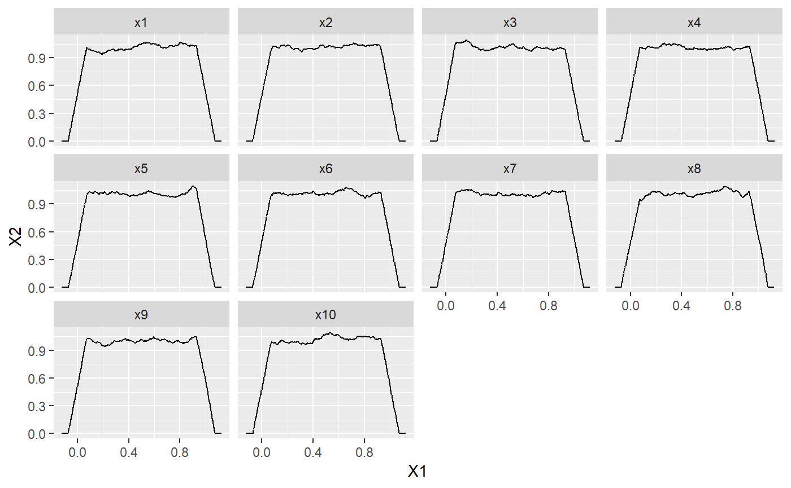
Gaussian Kernel with bw = “SJ”
variableDensity <- apply(df, 2, function(x){
dx <- density(x, bw = "SJ")
})
##for variable x1,...,x10
gestosc1 <- list()
j1 <- 1
for(i1 in c(names(df)[2:11])){
gestosc1[[j1]] <- data.frame(cbind(variableDensity[[i1]][["x"]], variableDensity[[i1]][["y"]], rep(i1, length(variableDensity[[i1]][["x"]]))))
j1 <- j1 + 1
}
g1 <- ldply(gestosc1, data.frame)
g1$X1 <- as.numeric(as.character(g1$X1))
g1$X2 <- as.numeric(as.character(g1$X2))
ggplot(g1, aes(x = X1, y = X2)) + geom_line() + facet_wrap(~X3) + labs(x = "`_x_`", y = "density")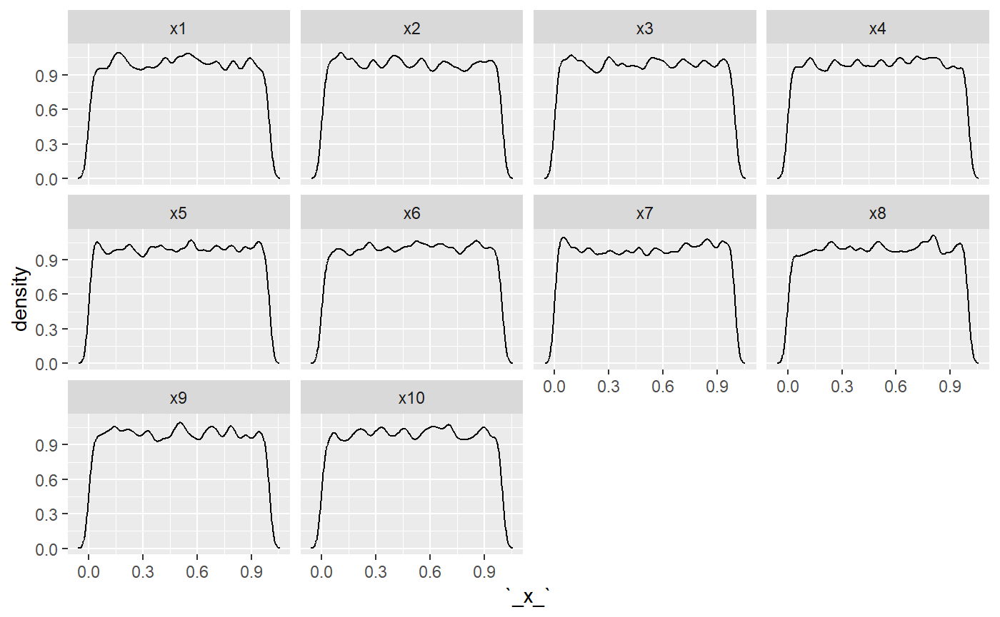
library("DALEX")
library("randomForest")
library("ceterisParibus")
library(gridExtra)
library(grid)
set.seed(59)Local Variable Importance Via Oscillations, kernel = “gaussian”, bw = “nrd0”
friedman_rf_model <- randomForest(y ~., data = df)
explainer_rf <- explain(friedman_rf_model, data = df[,2:11], y =df$y)
new_friedmann <- data.frame("y" = 8.924793, "x1" = 0.9002915, "x2" = 0.07000687, "x3" = 0.2255303,
"x4" = 0.3825585, "x5" = 0.2023882, "x6" = 0.389687, "x7" = 0.04077074,
"x8" = 0.2666487, "x9" = 0.144826, "x10" = 0.4970784)
cp_rf <- ceteris_paribus(explainer_rf, observations = new_friedmann[,2:11])
plot(cp_rf)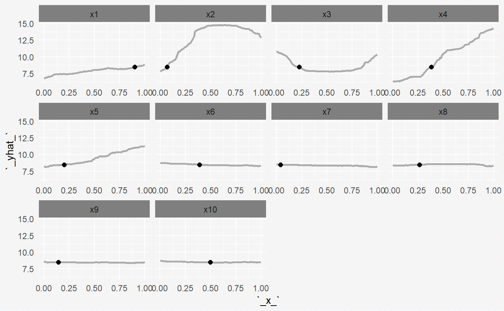
wyn <- LocalVariableImportanceViaOscillations(cp_rf, absolute_deviation = TRUE, point = TRUE, density = TRUE, df[,2:11])
#> Local Variable Importance Via Oscillations with parameters:
#> absolute_deviation = TRUE
#> point = TRUE
#> density = TRUE
#> kernel_density = gaussian
#> bw_density = nrd0
#>
#> Results:
#> x1: 91.3743931201796
#> x2: 495.624240773922
#> x3: 65.1294855906051
#> x4: 285.420168738561
#> x5: 157.77333768976
#> x6: 40.0820239063034
#> x7: 47.0105748601723
#> x8: 47.1920849523648
#> x9: 42.9006561514201
#> x10: 39.0360920074045
plot.local_importance(wyn)Local Variable Importance Via Oscillations, kernel = “gaussian”, bw = “SJ” link
wyn1 <- LocalVariableImportanceViaOscillations(cp_rf, absolute_deviation = TRUE, point = TRUE, density = TRUE, df[,2:11], bw_density = "SJ")
#> Local Variable Importance Via Oscillations with parameters:
#> absolute_deviation = TRUE
#> point = TRUE
#> density = TRUE
#> kernel_density = gaussian
#> bw_density = SJ
#>
#> Results:
#> x1: 81.5554217024124
#> x2: 504.701288948032
#> x3: 79.100587727302
#> x4: 293.446475310621
#> x5: 160.124240129923
#> x6: 39.1518827250155
#> x7: 40.7388834613429
#> x8: 38.535174870296
#> x9: 39.9961442002851
#> x10: 31.7226104426337
plot.local_importance(wyn1)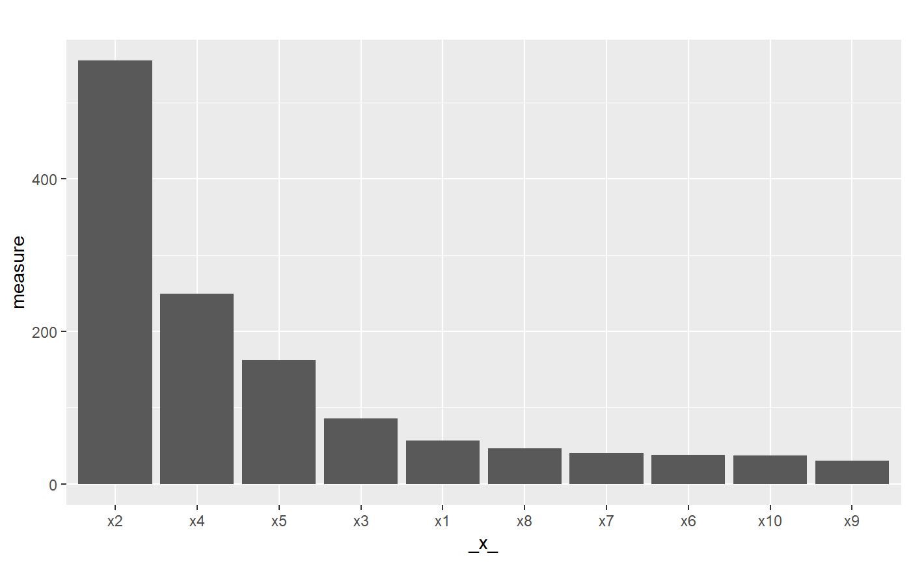
Apartments data
data(apartments)
apartments_rf_model <- randomForest(m2.price ~ construction.year + surface + floor +
no.rooms, data = apartments)
explainer_rf <- explain(apartments_rf_model,
data = apartmentsTest[,2:5], y = apartmentsTest$m2.price)
new_apartment <- apartmentsTest[1, ]
new_apartment
#> m2.price construction.year surface floor no.rooms district
#> 1001 4644 1976 131 3 5 Srodmiescie
cp_rf <- ceteris_paribus(explainer_rf, observation = new_apartment[,2:5])
plot(cp_rf)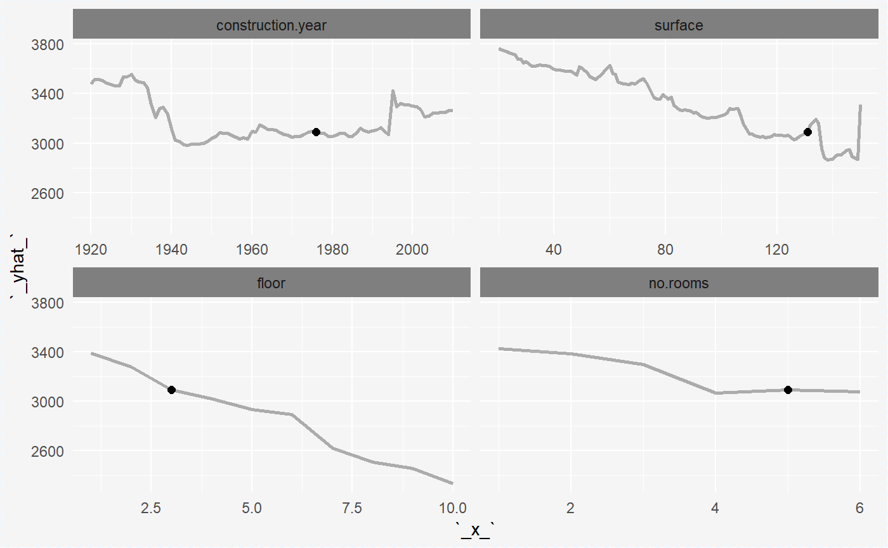
Density of variable
Histogram
dane_ <- list()
j <- 1
for(i in names(apartments)){
dane_[[j]] <- data.frame(cbind(apartments[,i], rep(i, nrow(apartments))))
j <- j +1
}
dane_1 <- ldply(dane_, data.frame)
dane_1$X1 <- as.numeric(as.character(dane_1$X1))
ggplot(dane_1, aes(x=X1)) + geom_histogram(bins=100) + facet_wrap(~X2, scales = "free") + labs(x = "`_x_`", y = "count")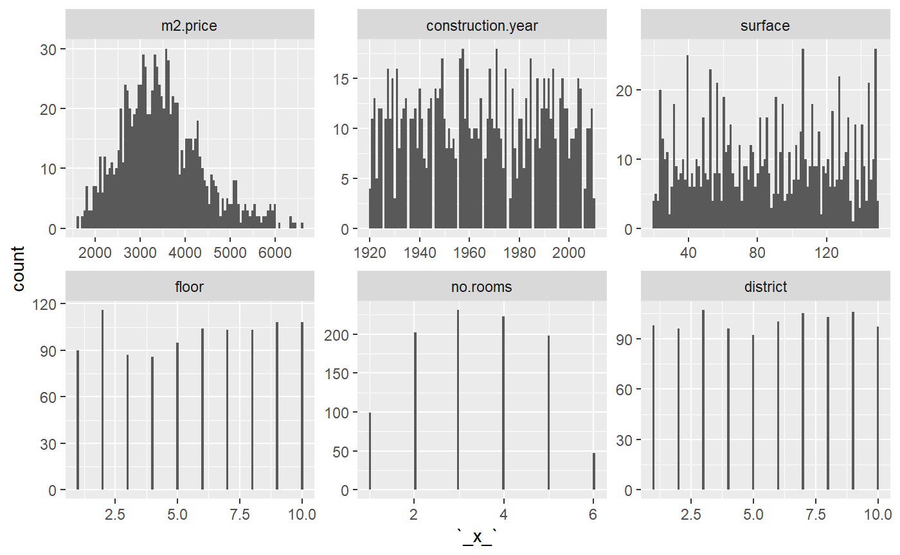
Density with gaussian kernel
data("apartments")
variableDensity <- apply(apartments[1:5], 2, function(x){
dx <- density(x, kernel = "gaussian")
})
gestosc <- list()
j <- 1
for(i in c(names(apartments)[1:5])){
gestosc[[j]] <- data.frame(cbind(variableDensity[[i]][["x"]], variableDensity[[i]][["y"]], rep(i, length(variableDensity[[i]][["x"]]))))
j <- j + 1
}
g <- ldply(gestosc, data.frame)
g$X1 <- as.numeric(as.character(g$X1))
g$X2 <- as.numeric(as.character(g$X2))
ggplot(g, aes(x = X1, y = X2)) + geom_line() +facet_wrap(~X3, scales='free')
Density with gaussian kernel and bw = SJ
data("apartments")
variableDensity <- apply(apartments[1:5], 2, function(x){
dx <- density(x, kernel = "gaussian", bw = "SJ")
})
gestosc <- list()
j <- 1
for(i in c(names(apartments)[1:5])){
gestosc[[j]] <- data.frame(cbind(variableDensity[[i]][["x"]], variableDensity[[i]][["y"]], rep(i, length(variableDensity[[i]][["x"]]))))
j <- j + 1
}
g <- ldply(gestosc, data.frame)
g$X1 <- as.numeric(as.character(g$X1))
g$X2 <- as.numeric(as.character(g$X2))
ggplot(g, aes(x = X1, y = X2)) + geom_line() +facet_wrap(~X3, scales='free')
Local Variable Importance Via Oscillations, kernel = “gaussian”, bw = “nrd0”
wyn <- LocalVariableImportanceViaOscillations(cp_rf, absolute_deviation = TRUE, point = TRUE, density = TRUE, apartments[,2:5])
#> Local Variable Importance Via Oscillations with parameters:
#> absolute_deviation = TRUE
#> point = TRUE
#> density = TRUE
#> kernel_density = gaussian
#> bw_density = nrd0
#>
#> Results:
#> construction.year: 309643.377886694
#> surface: 310586.77755354
#> floor: 285374.870974197
#> no.rooms: 232161.39760931
plot.local_importance(wyn)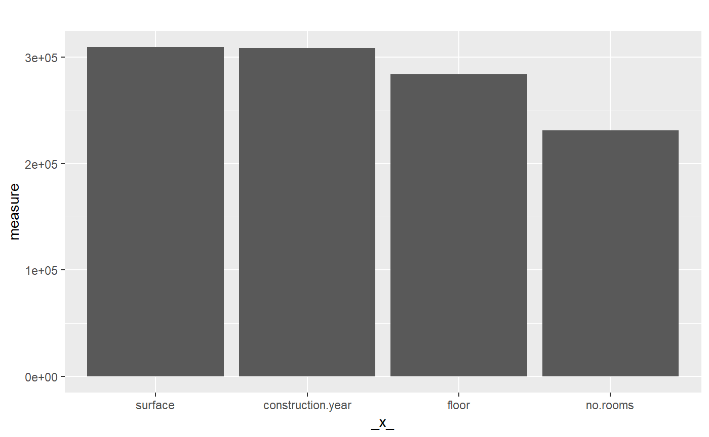
Local Variable Importance Via Oscillations, kernel = “gaussian”, bw = “SJ” link
wyn1 <- LocalVariableImportanceViaOscillations(cp_rf, absolute_deviation = TRUE, point = TRUE, density = TRUE, apartments[,2:5], bw_density = "SJ")
#> Local Variable Importance Via Oscillations with parameters:
#> absolute_deviation = TRUE
#> point = TRUE
#> density = TRUE
#> kernel_density = gaussian
#> bw_density = SJ
#>
#> Results:
#> construction.year: 309585.370020053
#> surface: 310539.499712192
#> floor: 104289.640633433
#> no.rooms: 683463.049801728
plot.local_importance(wyn1)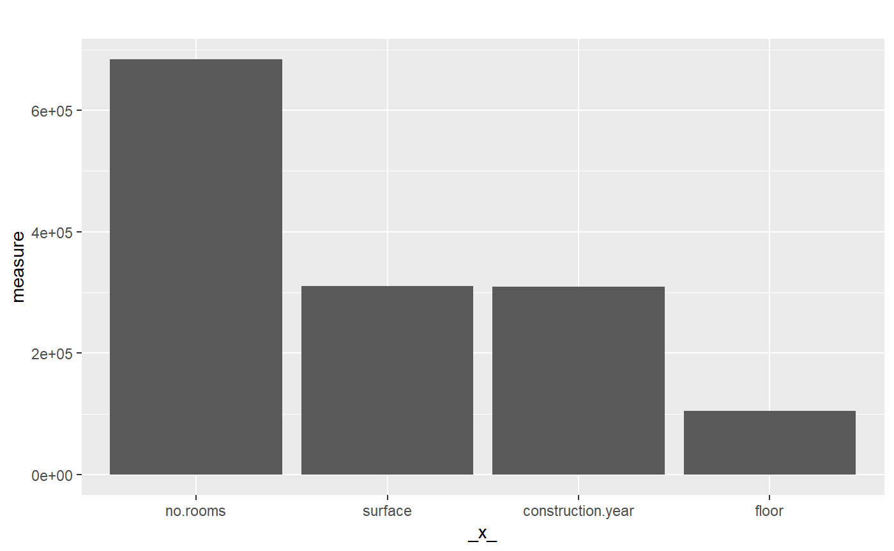
Example
n <- 1001
x1 <- runif(n)
x2 <- rbinom(n, 40, 1/4)
x3 <- rexp(n)
x4 <- runif(n)
y <- x1*x3 + x2
data <- data.frame(y, x1, x2, x3, x4)
new_obs <- data[1,]
data <- data[-1,]
model_rf <- randomForest(y~., data = data)
explainer_rf <- explain(model_rf,
data = data, y = data$y)
cp_rf <- ceteris_paribus(explainer_rf, observation = new_obs[2:5])
plot(cp_rf)
wyn <- LocalVariableImportanceViaOscillations(cp_rf, absolute_deviation = TRUE, point = TRUE, density = TRUE, data[,2:5])
#> Local Variable Importance Via Oscillations with parameters:
#> absolute_deviation = TRUE
#> point = TRUE
#> density = TRUE
#> kernel_density = gaussian
#> bw_density = nrd0
#>
#> Results:
#> x1: 85.403583170102
#> x2: 786.331632097081
#> x3: 534.267398559835
#> x4: 100.015630805871
plot.local_importance(wyn)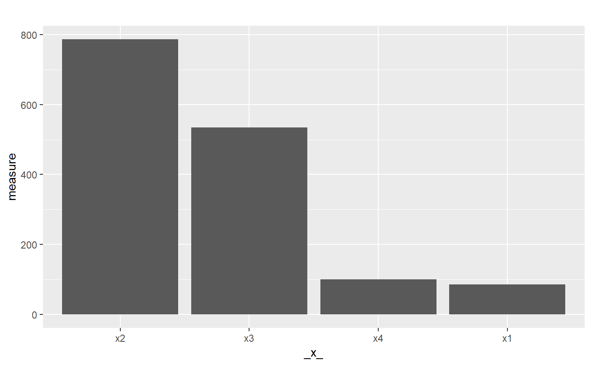
wyn1 <- LocalVariableImportanceViaOscillations(cp_rf, absolute_deviation = TRUE, point = TRUE, density = TRUE, data[,2:5], bw_density = "SJ")
#> Local Variable Importance Via Oscillations with parameters:
#> absolute_deviation = TRUE
#> point = TRUE
#> density = TRUE
#> kernel_density = gaussian
#> bw_density = SJ
#>
#> Results:
#> x1: 108.922549173817
#> x2: 359.634174780056
#> x3: 491.516008886234
#> x4: 95.8340146747655
plot.local_importance(wyn1)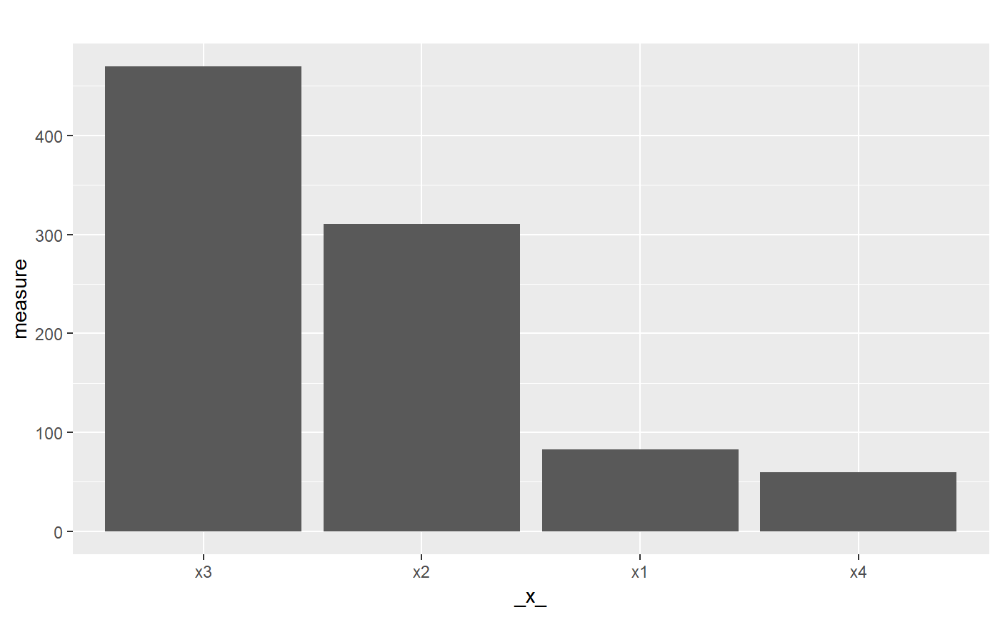
variableDensity <- apply(data, 2, function(x){
dx <- density(x, kernel = "gaussian", bw = "SJ")
})
gestosc <- list()
j <- 1
for(i in c(names(data))){
gestosc[[j]] <- data.frame(cbind(variableDensity[[i]][["x"]], variableDensity[[i]][["y"]], rep(i, length(variableDensity[[i]][["x"]]))))
j <- j + 1
}
g <- ldply(gestosc, data.frame)
g$X1 <- as.numeric(as.character(g$X1))
g$X2 <- as.numeric(as.character(g$X2))
ggplot(g, aes(x = X1, y = X2)) + geom_line() +facet_wrap(~X3, scales='free')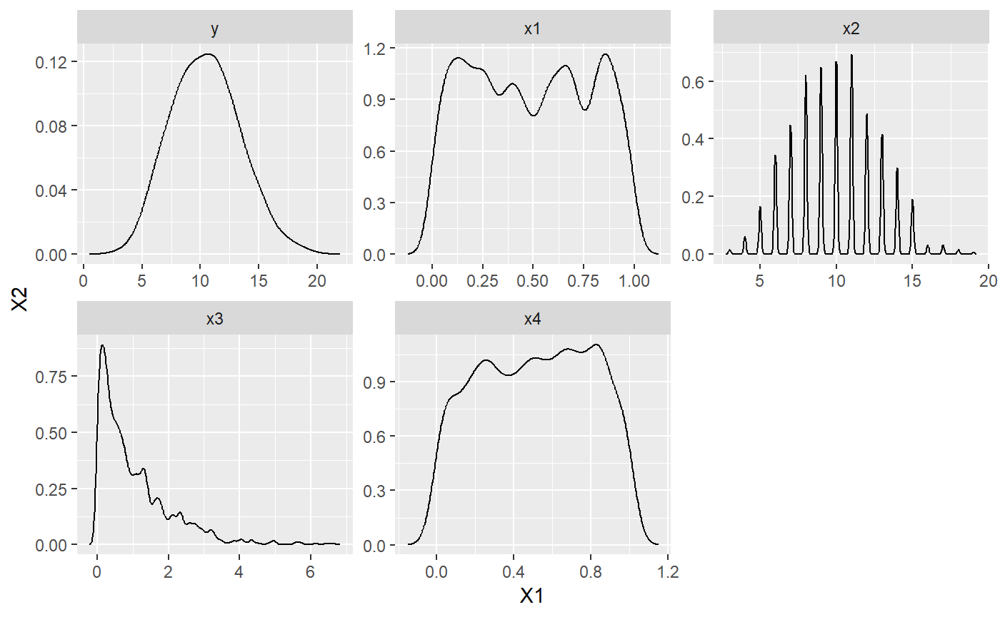